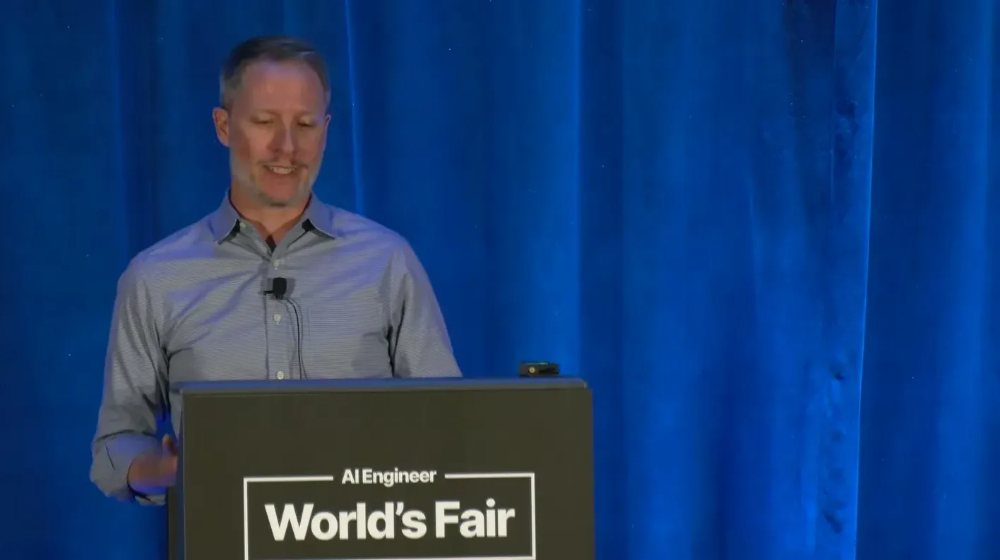
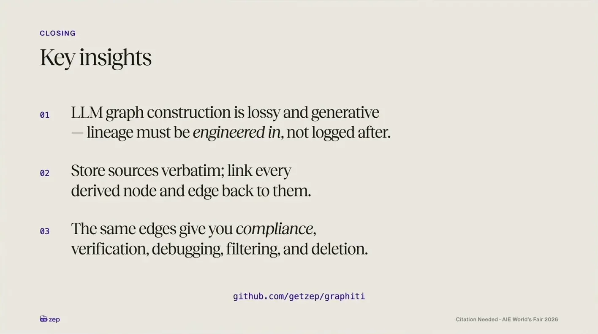

LLMs pull together data from multiple sources non-deterministically, interpreting and synthesizing into summaries, extracted facts, or structured records that often don't appear verbatim in any single source input. In a stylized healthcare example, an agent presenting a synthesized "patient has a penicillin allergy" fact without indicating it originated from a patient's own unverified chat input risks misleading a doctor.
“Synthesis often destroys the paper trail of how these outputs were originated.”
▶ watch at 00:00
A single source-ID field works in deterministic data-warehouse pipelines where one value is copied or mutated predictably. With LLM-run context pipelines this breaks down: many facts synthesize from multiple sources at once, entities like "J. Smith" and "John Smith" get merged into one identity, and new data can invalidate old facts, so lineage has to be an evolving set of links rather than a static pointer or append-only log.
“with context pipelines run by LLMs, this breaks in several ways. You prompt an LLM with several sources. Many facts are each synthesized from one or more of the sources.”
▶ watch at 03:07Zep's answer, implemented in its open-source Graffiti framework, is to model the links between facts and their source "episodes" as graph relationships, so tracing a fact back to its sources is a graph walk. When two entities merge, the merged entity must retain all source links from both, or a source silently gets dropped and lineage is lost; when new data invalidates an existing fact, Graffiti marks the edge invalid and records which source episodes caused the mutation.
“sets of links between facts and their sources can be modeled on a graph as relationships. So provenence in a context store containing facts is a knowledge graph.”
▶ watch at 04:08“when two entities merge the merged entity needs to keep all source links from both otherwise we silently drop a source and we lose lineage.”
▶ watch at 05:09Episodes can be tagged at ingestion (for example, an EHR tag on electronic health record data), and every entity and fact derived from that episode inherits the tag, so an agent can filter for facts from verified sources as it walks the graph. For a multi-source fact, whether all sources need to be verified or just one is a business-rule decision the graph exposes but doesn't itself enforce; the talk gives an allergy flag (any unverified source should block the fact) versus a consent-on-file flag (every source must be verified) as opposite-policy examples with the same three-source shape.
“the episodes with the EHR tag. All subsequent entities and facts derived from the episode inherit the tag.”
▶ watch at 06:46“the agent missing it, missing that particular flag could be a deadly mistake. So not retrieving the fact and any source of the three should block that prescription being issued.”
▶ watch at 07:49
The same link structure supports privacy/retention deletion requests: because lineage is explicit, a fact is only deleted once none of its remaining source episodes still support it, so deleting one of several sources for a fact doesn't necessarily delete the fact. The speaker notes that this lineage-preserving graph construction is expensive to run, and that the team has put significant engineering effort into reducing its cost and latency.
“A fact is only deleted if no remaining episodes support it.”
▶ watch at 09:58“lineage and provenence is expensive. Graph construction is really expensive uh in the way that graffiti does it. And so we've put significant effort into reducing cost and latency of generating graph artifacts.”
▶ watch at 11:37(ours) The talk is a vendor architecture walkthrough for Graffiti/Zep specifically, but the underlying argument, that provenance has to be engineered into the data structure rather than logged after the fact, applies to any agent memory or RAG pipeline doing LLM-driven synthesis or entity resolution, not just this implementation.
| Stance | Claim | t |
|---|---|---|
| asserts | LLM synthesis of context from multiple sources is non-deterministic and often destroys the traceable link back to the original source data. | 00:00 |
| warns | A simple source-ID pointer works for deterministic pipelines but breaks under LLM-run context pipelines where facts merge, synthesize from many sources, and mutate. | 03:07 |
| asserts | Provenance can be modeled as graph relationships linking facts to their sources, making tracing a fact a simple graph walk. | 04:08 |
| warns | When two entities merge, the merged entity must retain all source links from both, or a source is silently dropped and lineage is lost. | 05:09 |
| recommends | Tagging a source episode at ingestion (e.g., an EHR tag) propagates that tag to every entity and fact derived from it, enabling filtering by source veracity. | 06:46 |
| warns | For a safety-critical fact like an allergy flag, if even one of its sources is unverified, failing to surface that could be a deadly mistake. | 07:49 |
| asserts | A fact is deleted only when none of its remaining source episodes still support it, allowing partial source deletion without losing facts that other sources still back. | 09:58 |
| asserts | Building lineage into graph construction is expensive, and the team has invested significant effort into reducing the cost and latency of generating graph artifacts. | 11:37 |
Machine-readable copy embedded in this page (script#ontology) and in the corpus ontology.